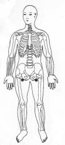
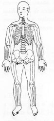

Travas de Segurança da Energia 15 - Segunda Profundidade
|
 |
TSE 15
Colocar as mãos sobre a virilhas correspondente TSE 15. ou
M.e. sobre o arco interno do pé direito na sola TSE 6;
M.d. sobre a virilha direita TSE 15 .
|
 |
Notas:1 - M.d. = mão direita M.e. = mão esquerda.
2 - O texto sublinhado indica que pode ser feito usando alternadamente o lado
direito (mão direita) e depois o lado esquerdo (mão esquerda).
3 - Tocar a área indicada, com a ponta dos dedos da mão, durante
alguns minutos ou até sentir uma pulsação rítmica.
Não precisamos nos preocupar em demasia com a precisão da área
indicada, pois cada trava de segurança da energia tem uma abragência
de uns sete centímetros em torno de si.